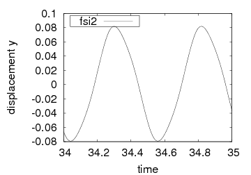
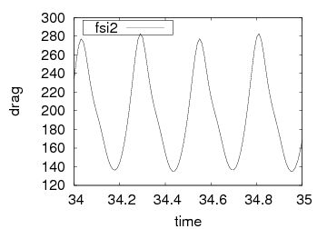
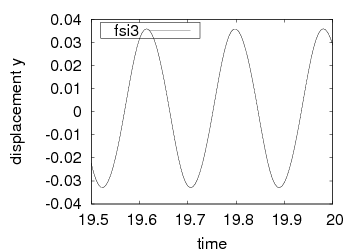
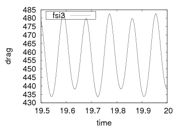

FSI tests
The following FSI tests are performed for two different inflow speeds. FSI1 is resulting in a steady state solution, while the other two tests (FSI2, FSI3) result in periodic solutions and correspond to the final benchmark settings.
| parameter | FSI1 | FSI2 | FSI3 |
|---|---|---|---|
 [
[ ] ] | 1 | 10 | 1 |
 | 0.4 | 0.4 | 0.4 |
 [
[ ] ] | 0.5 | 0.5 | 2.0 |
 [
]
[
] | 1 | 1 | 1 |
 [
[
 ]
] | 1 | 1 | 1 |
 [
[
 ]
] | 0.2 | 1 | 2 |
| parameter | FSI1 | FSI2 | FSI3 |
 | 1 | 10 | 1 |
| 0.4 | 0.4 | 0.4 |
 | 3.5 × 104 | 1.4 × 103 | 1.4 × 103 |
 | 20 | 100 | 200 |
| 0.2 | 1 | 2 |
| level | nel | ndof | ux(A) | uy(A) | drag | lift |
|---|---|---|---|---|---|---|
| 2+0 | 992 | 19488 | 2.287080e-05 | 8.193038e-04 | 1.427359e+01 | 7.617550e-01 |
| 3+0 | 3968 | 76672 | 2.277423e-05 | 8.204231e-04 | 1.429177e+01 | 7.630484e-01 |
| 4+0 | 15872 | 304128 | 2.273175e-05 | 8.207084e-04 | 1.429484e+01 | 7.635608e-01 |
| 5+0 | 63488 | 1211392 | 2.271553e-05 | 8.208126e-04 | 1.429486e+01 | 7.636992e-01 |
| 6+0 | 253952 | 4835328 | 2.270838e-05 | 8.208548e-04 | 1.429451e+01 | 7.637359e-01 |
| 7+0 | 1015808 | 19320832 | 2.270493e-05 | 8.208773e-04 | 1.429426e+01 | 7.637460e-01 |
)}}

| 2+0 | 992 | 19488 | -1.402e-2 ± 1.203e-2 [3.85] | 1.25e-3 ± 7.93e-2 [1.93] | 2.1010e+2 ± 7.262e+1 [3.85] | 2.5e-1 ± 2.279e+2 [1.93] |
| 3+0 | 3968 | 76672 | -1.454e-2 ± 1.250e-2 [3.86] | 1.25e-3 ± 8.07e-2 [1.93] | 2.1306e+2 ± 7.576e+1 [3.86] | 8.5e-1 ± 2.344e+2 [1.93] |
| 4+0 | 15872 | 304128 | -1.487e-2 ± 1.273e-2 [3.86] | 1.24e-3 ± 8.17e-2 [1.93] | 2.1283e+2 ± 7.589e+1 [3.86] | 9.2e-1 ± 2.343e+2 [1.93] |
| level | nel | ndof | ux(A) | uy(A) | drag | lift |
|---|---|---|---|---|---|---|
| 2+0 | 992 | 19488 | -1.401e-2 ± 1.204e-2 [3.86] | 1.25e-3 ± 7.93e-2 [1.93] | 2.1009e+2 ± 7.282e+1 [3.86] | 5.2e-1 ± 2.286e+2 [1.93] |
| 3+0 | 3968 | 76672 | -1.454e-2 ± 1.248e-2 [3.86] | 1.25e-3 ± 8.07e-2 [1.93] | 2.1306e+2 ± 7.576e+1 [3.86] | 8.5e-1 ± 2.344e+2 [1.93] |
| 4+0 | 15872 | 304128 | -1.487e-2 ± 1.273e-2 [3.86] | 1.24e-3 ± 8.17e-2 [1.93] | 2.1518e+2 ± 7.778e+1 [3.86] | 8.7e-1 ± 2.380e+2 [1.93] |
| 2+0 | 992 | 19488 | -1.401e-2 ± 1.204e-2 [3.86] | 1.28e-3 ± 7.92e-2 [1.93] | 2.1014e+2 ± 7.286e+1 [3.86] | 4.9e-1 ± 2.287e+2 [1.93] |
| 3+0 | 3968 | 76672 | -1.448e-2 ± 1.245e-2 [3.86] | 1.24e-3 ± 8.07e-2 [1.93] | 2.1305e+2 ± 7.574e+1 [3.86] | 8.4e-1 ± 2.348e+2 [1.93] |
| 4+0 | 15872 | 304128 | -1.485e-2 ± 1.270e-2 [3.86] | 1.30e-3 ± 8.16e-2 [1.93] | 2.1506e+2 ± 7.765e+1 [3.86] | 6.1e-1 ± 2.378e+2 [1.93] |


| level | nel | ndof | ux(A) | uy(A) | drag | lift |
|---|---|---|---|---|---|---|
| 2+0 | 992 | 19488 | -3.02e-3 ± 2.83e-3 [10.75] | 1.41e-3 ± 3.547e-2 [5.37] | 4.582e+2 ± 2.832e+1 [10.75] | 2.41 ± 1.4558e+2 [5.37] |
| 3+0 | 3968 | 76672 | -2.78e-3 ± 2.62e-3 [10.93] | 1.44e-3 ± 3.436e-2 [5.46] | 4.591e+2 ± 2.663e+1 [10.93] | 2.41 ± 1.5126e+2 [5.46] |
| 4+0 | 15872 | 304128 | -2.86e-3 ± 2.70e-3 [10.95] | 1.45e-3 ± 3.493e-2 [5.47] | 4.602e+2 ± 2.765e+1 [10.95] | 2.47 ± 1.5487e+2 [5.47] |
| level | nel | ndof | ux(A) | uy(A) | drag | lift |
|---|---|---|---|---|---|---|
| 2+0 | 992 | 19488 | -3.02e-3 ± 2.85e-3 [10.75] | 1.42e-3 ± 3.563e-2 [5.37] | 4.587e+2 ± 2.878e+1 [10.75] | 2.23 ± 1.4602e+2 [5.37] |
| 3+0 | 3968 | 76672 | -2.78e-3 ± 2.62e-3 [10.92] | 1.44e-3 ± 3.435e-2 [5.46] | 4.591e+2 ± 2.662e+1 [10.92] | 2.39 ± 1.5068e+2 [5.46] |
| 4+0 | 15872 | 304128 | -2.86e-3 ± 2.70e-3 [10.92] | 1.45e-3 ± 3.490e-2 [5.46] | 4.602e+2 ± 2.747e+1 [10.92] | 2.37 ± 1.5375e+2 [5.46] |
| level | nel | ndof | ux(A) | uy(A) | drag | lift |
|---|---|---|---|---|---|---|
| 2+0 | 992 | 19488 | -3.02e-3 ± 2.85e-3 [10.74] | 1.32e-3 ± 3.573e-2 [5.36] | 4.587e+2 ± 2.880e+1 [10.74] | 2.23 ± 1.4600e+2 [5.33] |
| 3+0 | 3968 | 76672 | -2.77e-3 ± 2.61e-3 [10.93] | 1.43e-3 ± 3.443e-2 [5.46] | 4.591e+2 ± 2.650e+1 [10.93] | 2.36 ± 1.4991e+2 [5.46] |
| 4+0 | 15872 | 304128 | -2.88e-3 ± 2.72e-3 [10.93] | 1.47e-3 ± 3.499e-2 [5.46] | 4.605e+2 ± 2.774e+1 [10.93] | 2.50 ± 1.5391e+2 [5.46] |